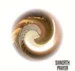

Home Artist links Label link

Sixnorth - Prayer
| Artist: | Sixnorth |
| Title: | Prayer |
| Label: | Poseidon Records/Musea PRF-011/FGBG4520 |
| Length(s): | 55 minutes |
| Year(s) of release: | 2003 |
| Month of review: | [01/2004] |
Line up
Hideyuki Shima - bass, guitars, voice, keys
with
Chizuko Ura - voice
Shinju Odajima - guitar
Takumi Seino - guitar
Eisuke Kato - keys
Kunihiro Kameda - keys
Toru Morichika - sax
Hiroshi Matsuda - drums
Akihisa Tsuboy - violin on 3
Futoshi Okano - gong
David Sinclair - organ on 8
Tracks
| 1) | Magnetic Factor | 6.46
|
| 2) | The Fourth Way | 7.48
|
| 3) | Everything Becomes Circle | 7.00
|
| 4) | The Enneagram | 9.36
|
| 5) | From Sri Lanka To Titan | 8.41
|
| 6) | The Age Of Horus | 5.56
|
| 7) | Introduction To Richard | 3.47
|
| 8) | Richard | 5.46
|
Summary
The music
This is an album with some different flavours, mostly traditional American type seventies jazzrock (or pop, even). We have the friendly sounding stuff, with cheesily humming or ha-ing lady, such as Magnetic Factor and Everything Becomes Circle. Then there's your basic freaky material with guitar or sax going off onto Meanderville, or even a whole band getting lost. The guitar tends to sound a bit more modern, and more spicy, giving the flavour pretty much.
From Sri Lanka To Titan manages to combine all sorts stuff, first the band gets lost, than the guitar manages to get ahead, to be topped off by the singing lady.
The closing section of The Age Of Horus is pretty progressive, or at least melodic, all of a sudden, and quite a refreshment in this barren land. This tranquility is brought over into Introduction To Richard, with Richard being something of an obade to Richard Sinclair. A sudden melodic ending to an otherwise meanderrich disc.
Conclusion
This album is not very progressive, nor is it even remotely original. It revives the spirit of a cheesy jazzpop of which the demise did me some pleasure (albeit long after the fact). The sudden good ending could not wash away the taste created earlier. If you're into the kind of stuff the American jazzrock clan made in the late seventies, when disco and other influences had really tainted their music, you might enjoy this. Don't expect anything progressive on this, for one thing, though.
© Roberto Lambooy